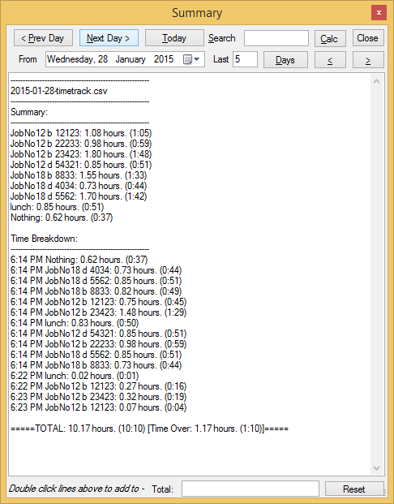
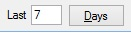
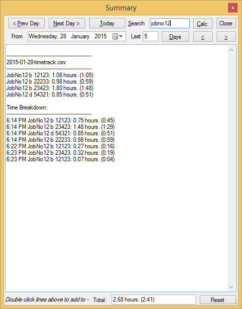
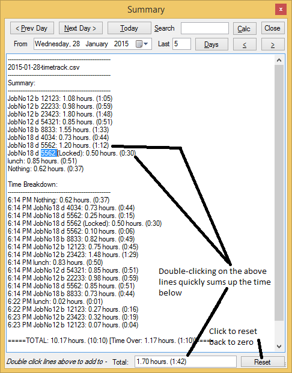

Summary
Open Summary with the s button on the main window or by pressing Ctrl+S.

Summary is used to review the time you recorded for a single day or for a range of days.
View a different day
Use any of these controls at the top of the Summary window:
Prev DayNext DayToday- the
Fromdate picker
View several days at once
- Choose a start date in
From. - Enter the number of days in
Last. - Click
Days.

The < and > buttons beside Days move backward or forward by that same number of days.
Search the summary
Use the Find box to show only lines that match your search text.

Search tips:
*matches any number of characters.?matches a single character.- Clear the search box to show the full summary again.
Add up selected lines
Double-click any summary line that ends with a time such as (0:15).
TinyTracker adds that line to the Total box at the bottom of the window.

Use Reset when you want to start that running total again.
What Summary shows
For each day, TinyTracker shows:
- a
Summarysection grouped by task - a
Time Breakdownsection in time order - a daily total and remaining time
The daily remaining time uses your Working minutes per day and Lunch break minutes per day settings.